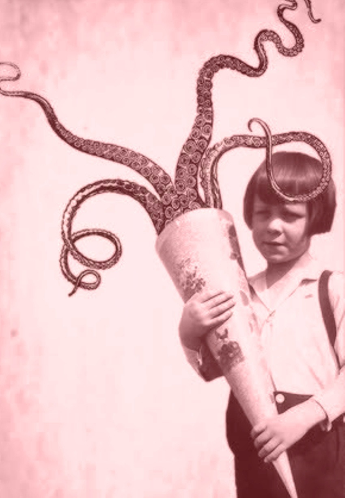

Friday, June the 5th, 2015
back to: title, date or indexes
Evidence has come to light that Tiny Enid, the plucky club-footed tot of this parish, may have had more in common with H. P. Lovecraft than a fondness for fascism. I am grateful to OutaSpaceman for bringing to my attention this snap, originally found on something called the “Flickr account” of one Lawrence Jones:
